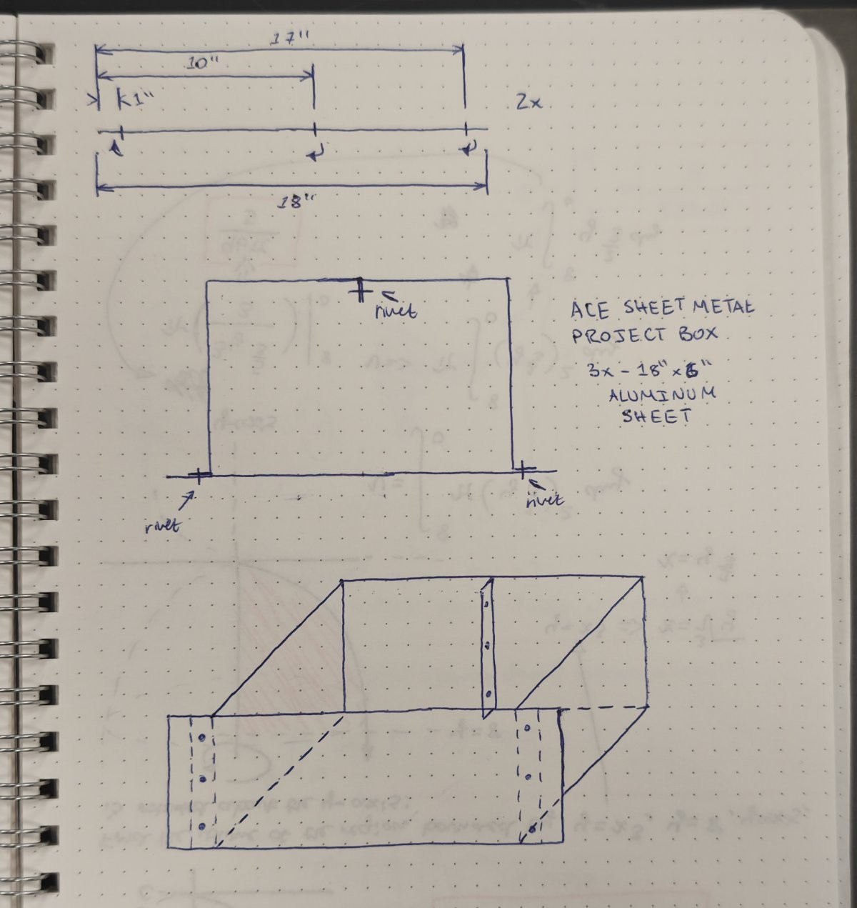

SEM Beam Supply
Status: Complete (for now)
10/13/2026
Continuing my SEM project, I needed a high-voltage (0-10kV) supply that can be biased such that 0v is 10kV (giving -10kV to 0v output).
I figure I should probably explain how an electron gun works in an electron microscope. Much of what I have learned about electron microscopy has come from Ben Krasnow over at Applied Science (a huge role-model of mine), so for a much more in-depth explanation, please check out his series of episodes on his homebuild SEM. In essence, an electron gun of this type has three parts: filament, wehnelt, and anode. The filament is first in order and it is essentially our electron source. Through thermionic emission, electrons are boiled off of this filament -- the voltage that we apply to the filament doesn't actually have as much to do with the SEM as you would think, it is just the easiest way to heat the filament up. Next up, we have the wehnelt cylinder/cup. In essence, this is a "cup" shaped metal piece with a very fine aperture at the end. The filament is positioned inside of this cup such that the tip of the tungsten just pokes through the top edge. By applying a negative electrical charge relative to the electron emitter (around 300v is recommended), a repulsive electrostatic field is created that forces diverging electrons into a tight, focused beam. Adjusting this "bias", we can change the beam current and in turn, the spot size. Making it too negative blocks the beam entirely, while making it less negative lets more electrons through. Lastly is the anode, acting as a highly positive electrode that attracts, accelerates, and columnates the electron beam. When you give it a high voltage (in this case 10kV max relative to the emitter), the immense voltage difference creates a powerful electrostatic field. Because electrons are negatively charged, they are violently repelled by the cathode/wehnelt setup and forcefully pulled toward the positive anode. This gives the electrons their kinetic energy and allows us to, in essence, smash them into a sample and measure how many come back to us.
So let's get building!
Here is a (very loose) schematic of what I need to make:
 The general layout is as such: A variac's output (non-isolated 0-120vAC) goes into a 120v to 6v transformer with a high voltage isolation rating. This makes a 0-6v AC supply that is "floating", meaning we can bias it to whatever we want. Afterwards, this goes into a full wave bridge rectifier. Interestingly, despite this entire thing being biased to -10kV, the diodes are never seeing more than the 0-6v, thus we can get away with using standard 1N4149 diodes. (NOTE: HIGH VOLTAGE IS DANGEROUS! Many of these components are potted in special epoxy and STILL require care to not be deadly!!). At our DC(ish) filament heater output, we use two resistors between both leads of the filament to create a voltage divider, which gives us roughly half of the filament voltage at the midpoint. This will be our voltage reference. This midpoint goes to an 80MΩ resistor which connects (through a current meter) to our negatively biased high-voltage supply. This 80MΩ resistor allows only a tiny current to pass. It's voltage drop at this tiny current is what makes the wehnelt bias of ~300v relative to the cathode, while also giving us our emission current (displayed on our 100uA meter). Using ohm's law, we can measure that tiny current through the resistor (emission current), and given the adjustable HV supply (accelerating voltage), we can infer the voltage drop of the resistor, giving us the bias voltage of the wehnelt cup. Next, we can see the anode, which sits around ground potential (which is very high compared to the -HV), accelerating our electrons nicely. This is often referred to as a "self-biasing" wehnelt circuit, as it determines its bias based on beam voltage and beam current. This contrasts with a more conventional design where you would have a separate floating bias supply to establish that ~300v difference. This schematic negates the panel meter that I used for the high voltage. It was a kit that I found on Amazon that came with a 1 gigaohm resistor and a current meter. Unfortunately, it measures up to 100kV, so I will probably use a slightly different meter and make my own front panel label. Some notes in no particular order:
The general layout is as such: A variac's output (non-isolated 0-120vAC) goes into a 120v to 6v transformer with a high voltage isolation rating. This makes a 0-6v AC supply that is "floating", meaning we can bias it to whatever we want. Afterwards, this goes into a full wave bridge rectifier. Interestingly, despite this entire thing being biased to -10kV, the diodes are never seeing more than the 0-6v, thus we can get away with using standard 1N4149 diodes. (NOTE: HIGH VOLTAGE IS DANGEROUS! Many of these components are potted in special epoxy and STILL require care to not be deadly!!). At our DC(ish) filament heater output, we use two resistors between both leads of the filament to create a voltage divider, which gives us roughly half of the filament voltage at the midpoint. This will be our voltage reference. This midpoint goes to an 80MΩ resistor which connects (through a current meter) to our negatively biased high-voltage supply. This 80MΩ resistor allows only a tiny current to pass. It's voltage drop at this tiny current is what makes the wehnelt bias of ~300v relative to the cathode, while also giving us our emission current (displayed on our 100uA meter). Using ohm's law, we can measure that tiny current through the resistor (emission current), and given the adjustable HV supply (accelerating voltage), we can infer the voltage drop of the resistor, giving us the bias voltage of the wehnelt cup. Next, we can see the anode, which sits around ground potential (which is very high compared to the -HV), accelerating our electrons nicely. This is often referred to as a "self-biasing" wehnelt circuit, as it determines its bias based on beam voltage and beam current. This contrasts with a more conventional design where you would have a separate floating bias supply to establish that ~300v difference. This schematic negates the panel meter that I used for the high voltage. It was a kit that I found on Amazon that came with a 1 gigaohm resistor and a current meter. Unfortunately, it measures up to 100kV, so I will probably use a slightly different meter and make my own front panel label. Some notes in no particular order:
- The 80Mohm resistor should realistically be replaced with a rheostat or potentiometer, allowing you to adjust the wehnelt bias. Unfortunately, it is almost impossible to find a potentiometer that can handle 10kV, is adjustable from, say, 0-100MΩ, and can handle the maximum watt or two going through it. Reading Ben Krasnow's blog, I fonud that he used some kind of potentiometer from a CRT flyback circuit which is specially designed for this application -- CRTs are effectively electron guns! Unfortunately, I was unable to find a similar pot, so I used a resistor in its place that gives me the desired wehnelt voltage of 300v at ~3.75uA, which is a reasonable emission current.
- High voltage is dangerous! Even though I have technically done everything correctly, I wouldn't so much as touch the chassis while it is on. A small ground fault could cause floating high voltage to go to the metal case and seriously hurt you. After all, we are essentially connecting our floating HV+ directly to the metal chassis, which is in turn grounded. Stay safe!!
- High isolation voltage stepdown transformers are essentially impossible to find. Unless you gut a CRT, there really arent a lot of options. I used a Zettler Magnetics BV301S06028 from DigiKey, which I thought offered a 4200Vrms isolation (this can often be pushed -- this is a fully potted transformer after all), but unfortunately, DigiKey mislabeled it, and this is actually a 1 second test from primary to secondary, so really not great. For now, I don't hear any arcing and the transformer seems to be doing fine, so I will do only my preliminary tests of the beam with this transformer and I will change it out as soon as I can find a more suitable one.
- My HV feedthroughs which can hold a vacuum are actually simple A7TC resistorless spark plugs, and thus I can use spark plug high-tension lead wire and standard spark plug boots for my wiring. Unfortunately, I ran out of this wire and so I purchased some from high voltage wire from McMaster (#9620T13). This stuff was very nice to work with -- perhaps I will change the rest to this type of wire when budget allows.
- I am using a cheap power supply from eBay as my high voltage supply. They are often labelled as "CX-20". This is in essence a very high frequency ZVS driver and flyback transformer in one. This is absolutely horrible for real electron microscopy -- your acceleration would be constantly turning on and off tens thousands of times per second, but for a quick beam test, it should be totally fine. Eventually, I will make a CW multiplier which will make slightly higher DC voltage, but this is a lot of work for a preliminary test. Usually, you would need very, very tightly regulated DC for a real deal microscope.
After collecting all of my parts, I needed a place to put them. I have made quite a few of these little rack-mount style enclosures, and its really not that hard to make something that looks quite professional. I buy my sheet aluminum in 6" by 18" length strips. In this case, I only needed three.

The cheapest round aluminum handles are also mounted to the front to make for easier handling.
Next, I layed out the front panel and got to drilling all of the holes for gauges, potentiometer, power switch, and cable glands:


Since the base of my enclosure is plywood, I can use simple wood screws to mount everything down, which makes prototyping very easy. I used a standard switch-mode power supply outputting 12v to power the CX-20 module, and then the rest of the wiring was done point-to-point. I made my full wave bridge rectifier using a small 3d-printed trough and I filled it with potting epoxy. Again, these diodes will only see the 0-6v, but since they are sitting at the negative high-voltage potential, it is good to have them potted so that nothing arcs. My wiring was pretty janky, honestly. Definitely not my best work and the actual safety of it is really questionable, but I am getting no arcing and it seems to be fine so far. Perhaps some day, I will make a nice PCB for some of these parts and minimize the amount of point-to-point work on here, but as they say, the temporary solutions always last the longest :)
Note: Some of these pictures had errors in the wiring -- this is NOT a wiring guide! They have since been corrected!
Here it is with the variac, some vacuum gauges, and the open chamber showing the column inside! Perhaps if I have some success, I will make another article with some more information on wiring inside of the chamber and such. Enjoy :)